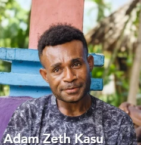
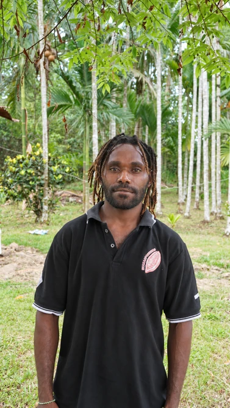

Belajar dan berbagi
Adam Zeth Kasu
Tumbuh dalam keluarga petani kakao, Adam sempat memilih bertani jagung setelah lulus SMK. Pendampingan dan kesempatan belajar budidaya kakao di Makassar kemudian membuka kembali minatnya pada kakao.
Ia mempelajari pemangkasan, pengendalian hama dan penyakit, serta sambung pucuk. Sepulangnya, pengalaman itu ia bagikan kepada petani lain. Perjalanannya memperlihatkan bagaimana keterampilan satu orang dapat menjadi ruang belajar bersama.
“Jangan hanya mengejar hasil yang cepat. Tanamlah sesuatu yang bisa tumbuh bersama kita.”

Kembali membangun harapan
Nindiron Gire
Pekerjaan yang berat dan berisiko di tempat pengiriman barang di Pasar Abepura mendorong Nindiron kembali ke Yapsi dan menekuni kakao. Ia mengelola kebun sekitar 0,5 hektare, dengan pinang dan durian sebagai penaung.
Playbook mencatat panen sekitar 10 kilogram biji kering setiap dua minggu. Ia menerapkan fermentasi dan mengikuti pelatihan sambung pucuk, sambung samping, serta pemangkasan melalui GNTB.
Serangan hama dan kesulitan memperoleh pupuk masih menjadi tantangan. Pelatihan lanjutan dan dukungan perawatan kebun menjadi bagian dari harapannya.
Angka tersebut menggambarkan pengalaman kebun narasumber dalam playbook, bukan rata-rata hasil kebun Lereh.